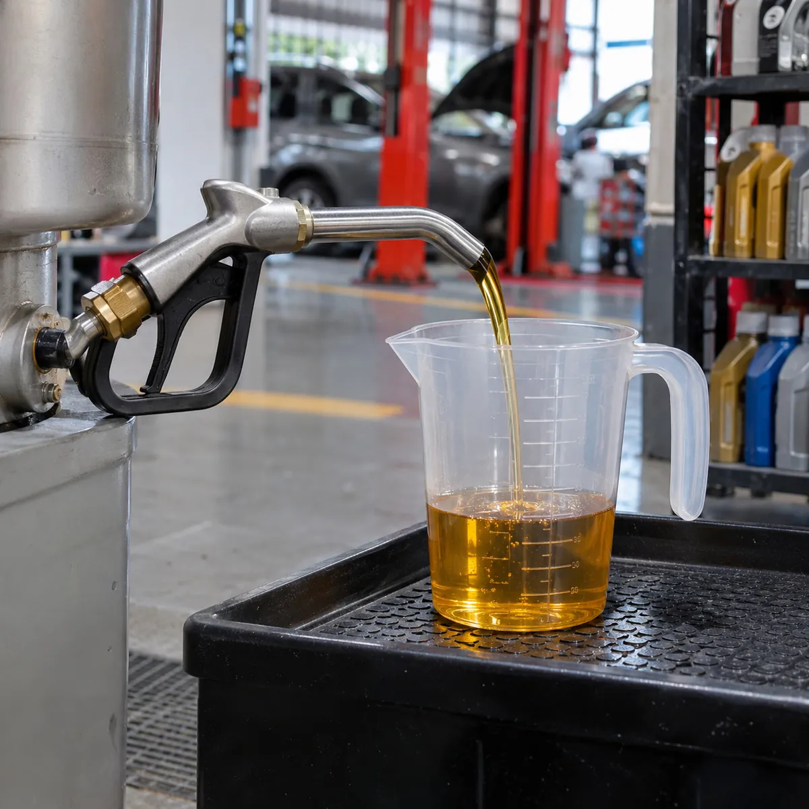
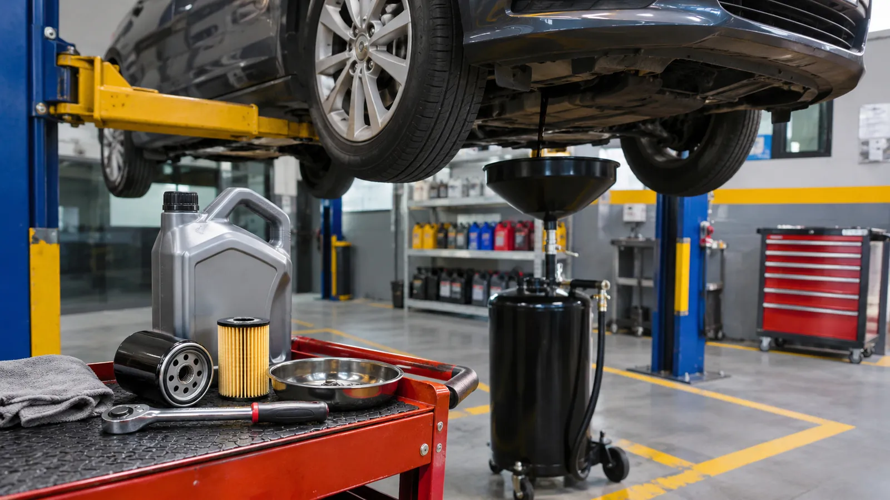
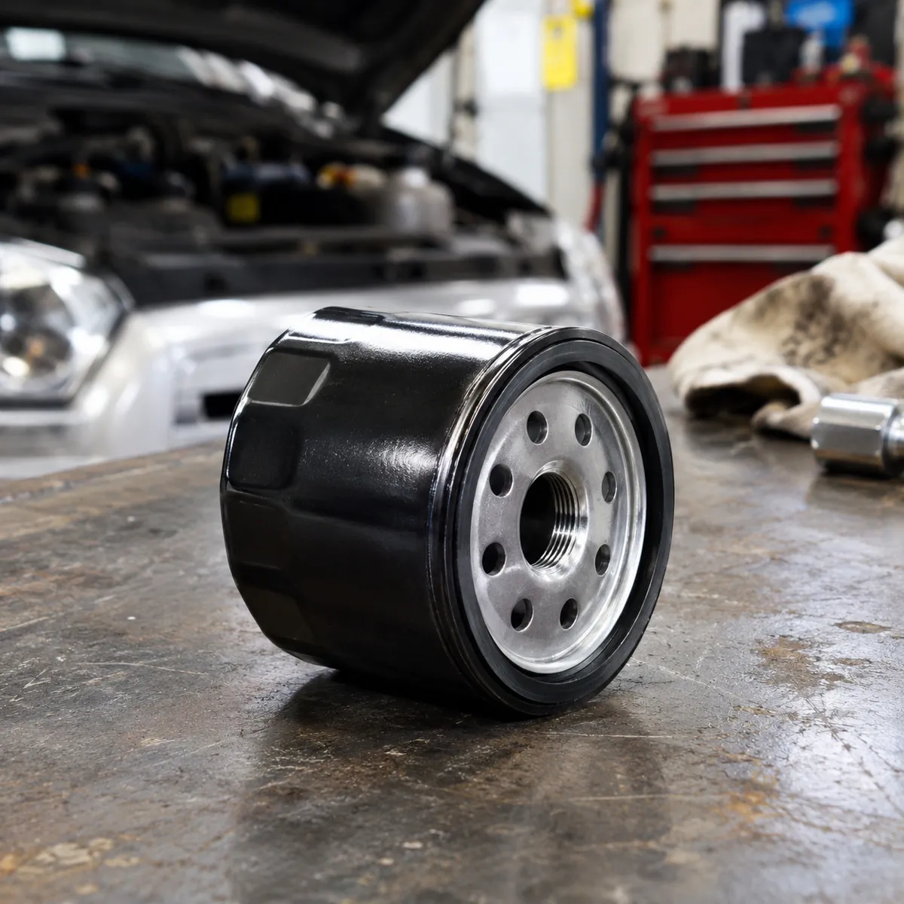
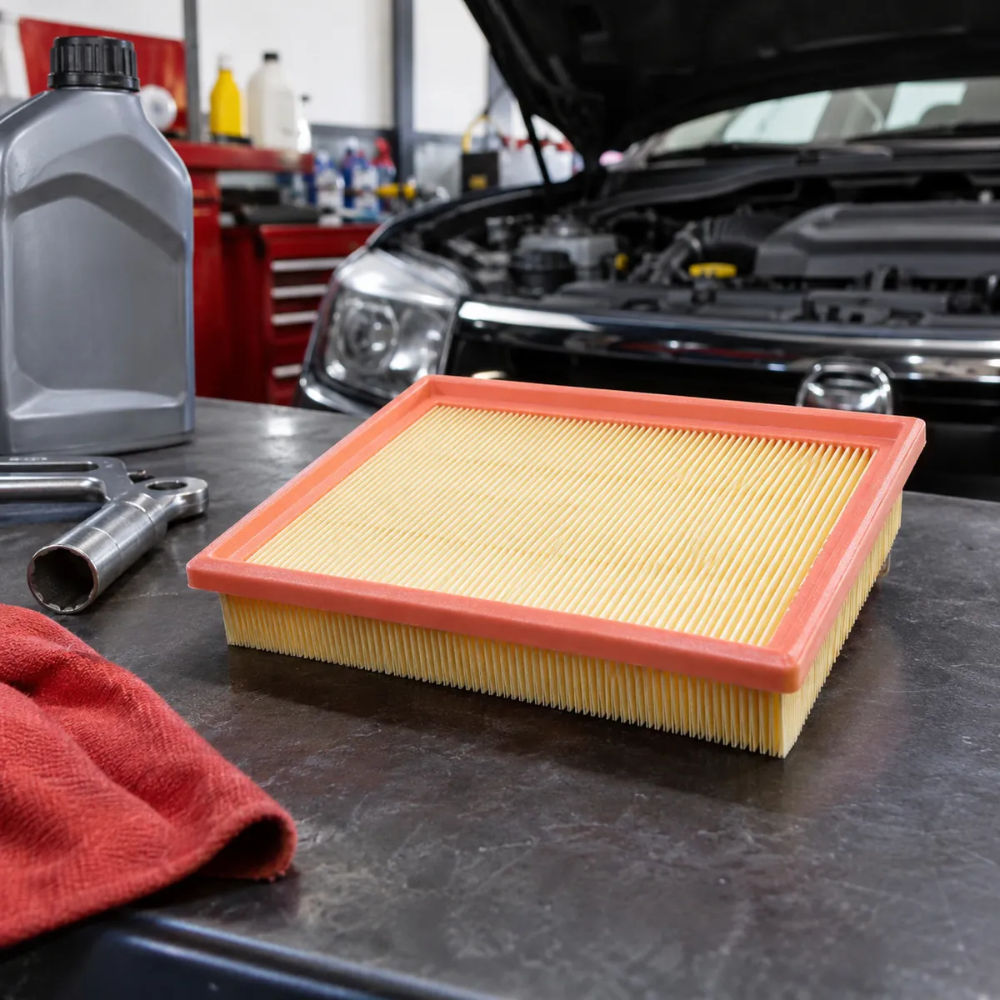
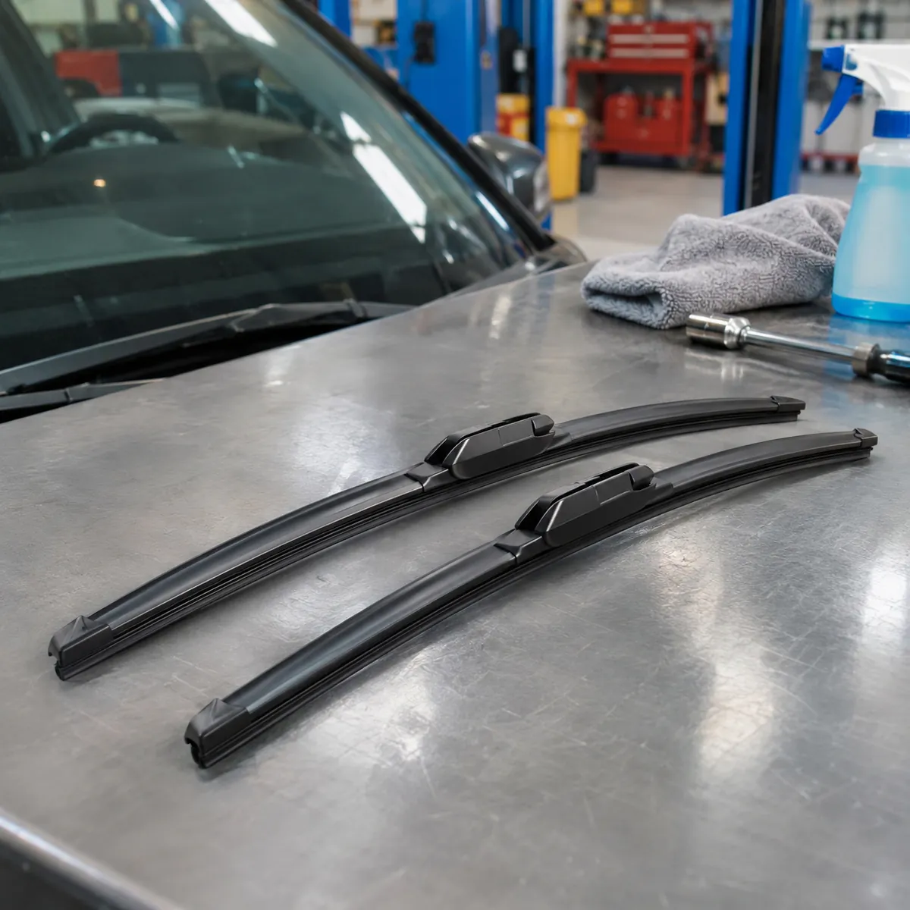
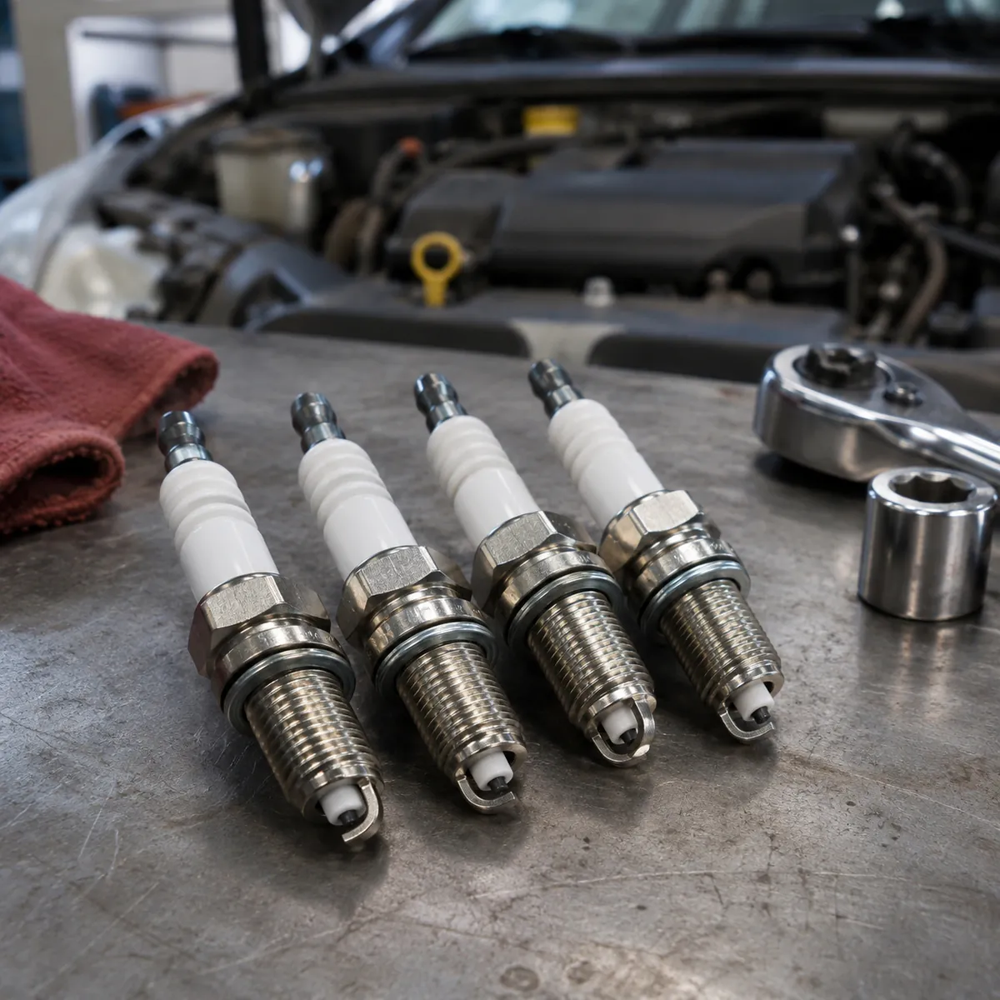
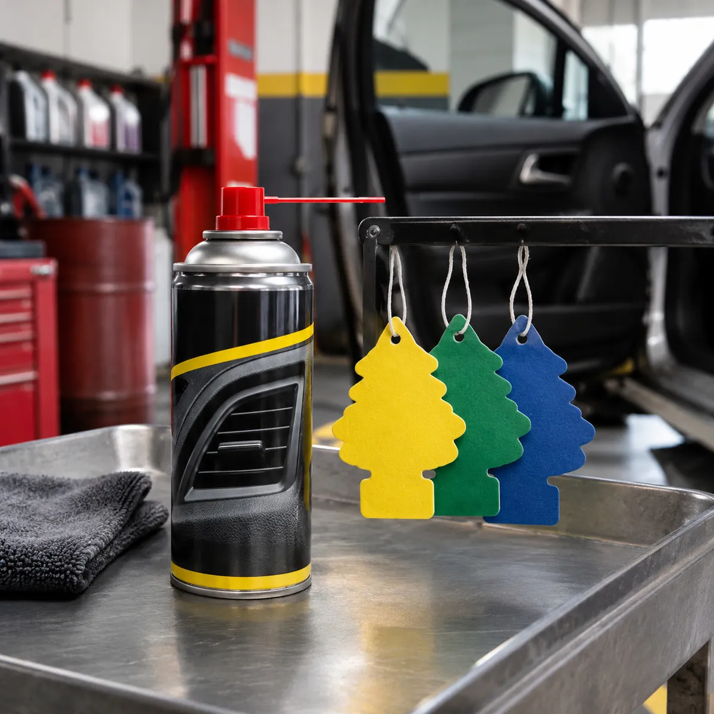
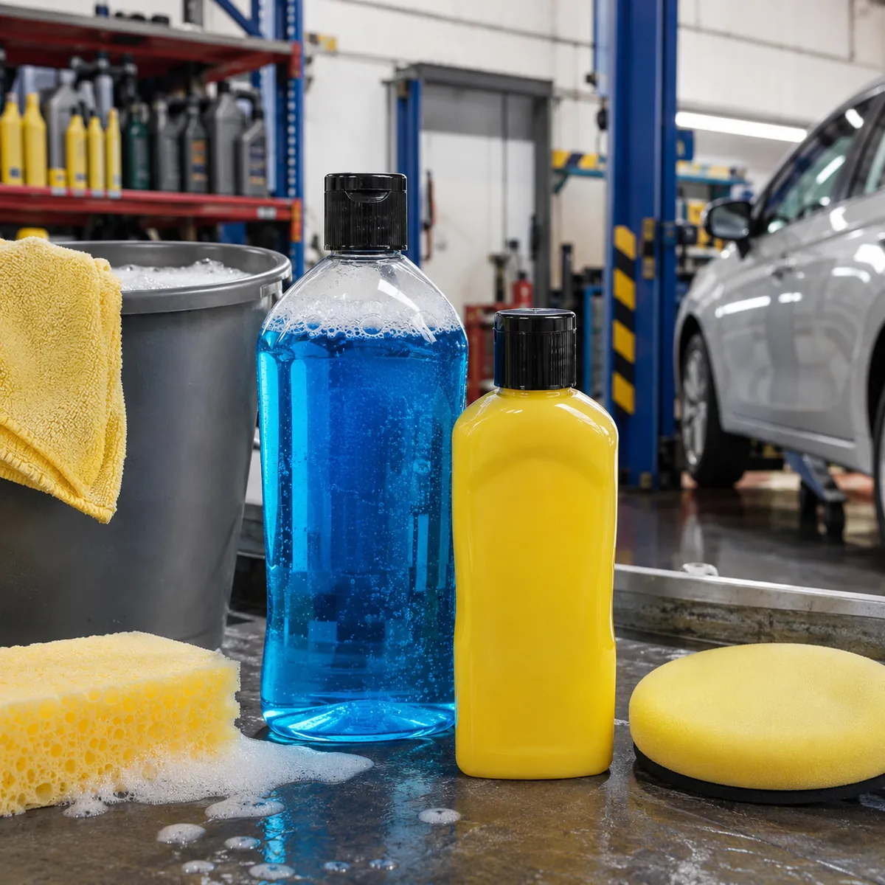

Aceite suelto
Por litro, para completar el nivel sin comprar un bidón entero.
Consultar por WhatsApp
Lubricentro en Rosario
Aceite suelto, filtros, escobillas, bujías y accesorios para tu auto. Pedí tu turno por WhatsApp y pasá de lunes a sábado.

Por litro, para completar el nivel sin comprar un bidón entero.
Consultar por WhatsApp

Pasanos marca, modelo y motor y te decimos cuál le va a tu auto.
Consultar por WhatsApp

Escobillas para ver bien cuando llueve y bujías para que el motor arranque parejo.
Consultar por WhatsApp

Silicona, perfumes, pinitos, shampoo y ceras para el interior y la carrocería.
Consultar por WhatsAppMineral, semisintético o sintético: el que indica el fabricante para tu motor.
Se cambia con el aceite, para que el nuevo no arrastre la suciedad del viejo.
Si está sucio, el motor respira menos: se cambia en la misma parada.
Coordinás el día y el horario antes de venir, de lunes a sábado.
Pasanos marca, modelo y kilómetros del auto por WhatsApp.
Te damos día y horario, de lunes a sábado.
Aceite y filtro de aceite y, si hace falta, el de aire.
Con el próximo cambio anotado, para que no se te pase.
Poné los kilómetros de hoy y el aceite que usa tu auto: armamos la oblea y pedís el turno.
Poné los kilómetros que marca el tablero.
Intervalos orientativos: el que manda es el manual de tu auto.
Próximo cambio
Lo que llegue primero: los kilómetros o la fecha.
Lunes a sábado
Conviene pedirlo por WhatsApp: así coordinamos el horario y tenemos listo el aceite y el filtro de tu auto.
El que indica el manual del fabricante. Si no lo tenés a mano, pasanos marca, modelo, año y motor y te asesoramos.
Depende del aceite y del uso: como referencia, entre 5.000 y 10.000 km o cada 6 meses. Lo exacto lo marca el manual de tu auto.
Sí, por litro, para completar el nivel entre un cambio y otro.
Lunes a viernes de 8 a 19 y sábados de 9 a 14. Los domingos está cerrado.